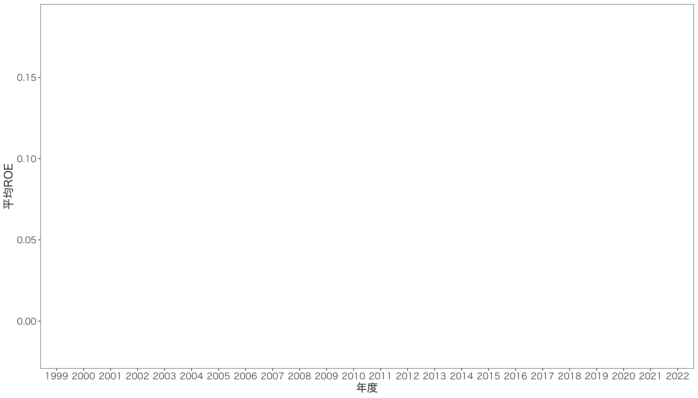
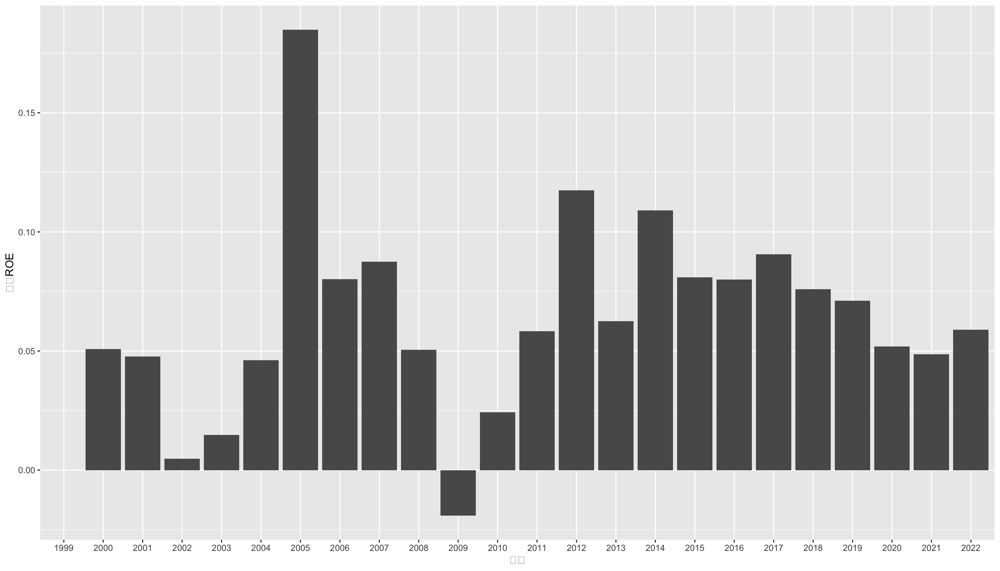
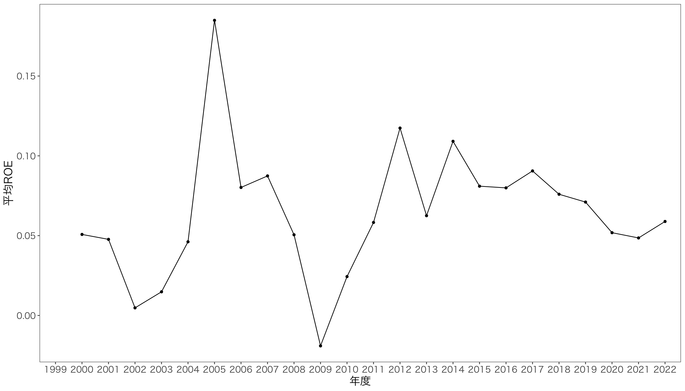
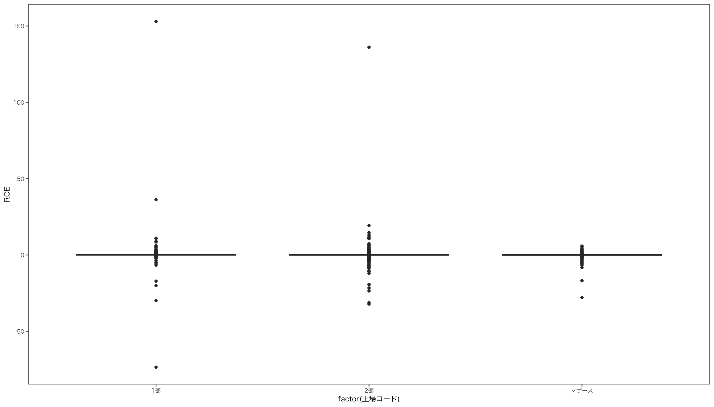
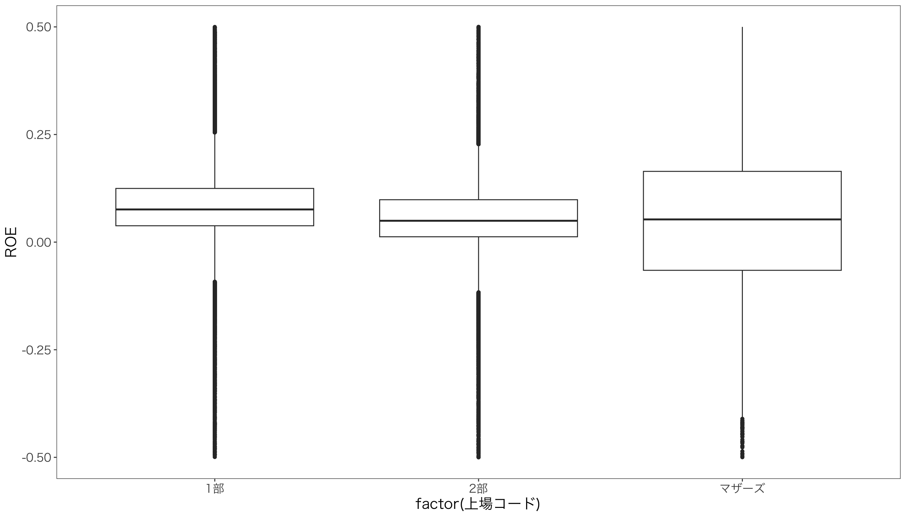
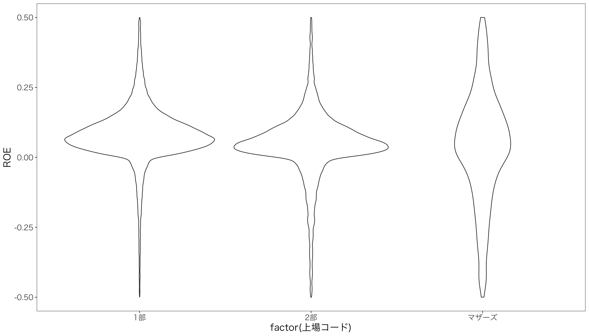

# install.packages("tidyverse") # first time only
# install.packages("ggthemes")
# install.packages("patchwork")6 記述統計とデータの可視化・視覚化
ここではRの得意とするデータの可視化(data visualization)について学びます。 いままで利用してきたtidyverseにはグラフ作成のためのパッケージとしてggplot2があります。 本章では，ggplot2の使い方を学習し，読者にもデータの特徴を伝えやすく，シンプルで，美しいグラフの作成を目指します。
ggplot2を使うためにtidyverseとggthemesとpatchworkを読み込みます。まだインストールできていなければ，始めにインストールしておいてください。
library(tidyverse)
library(ggthemes)
library(patchwork)
require(fontregisterer)また、Macだとggplot2で作図したグラフで日本語が表示されないことがあります。 そのため、グラフのスタイルを事前に設定しておいて、文字化けを回避します。
mystyle <- list (# ggplotのテーマ
theme_few(),
theme(
text = element_text(
size=16, # フォントサイズ
family = "HiraKakuProN-W3" # ヒラギノフォント
)
)
)6.1 変数の種類と記述統計
データには「カテゴリ変数」(category variable)と「量的変数」(quantitative variable)あるいは「連続変数」(continuous variable)があり，それぞれに対して適切なグラフの種類があります。
6.1.1 カテゴリー変数と量的変数
カテゴリー変数(category variable)とは、観測値が属するカテゴリーを表す変数です。 たとえば、日経産業中分類の「水産」は35、鉱業は37，建設は41ですが、これらの数値は足したり引いたりすることに意味はありません。
量的変数(quantitative variable)とは、観測値が数値で表される変数です。 たとえば、売上高や株価は金額で表されるため、足したり引いたり、平均や分散を計算することに意味があります。
したがって、手元にあるデータベースの各変数がカテゴリー変数か量的変数かを把握することは極めて重要です。 Rでは自動で両者を区別したりはしてくれないので、データを読み込んだ後に変数の種類を確認し、自分で指定します。
練習用データの読み込み
ここでは、教科書とは違う、企業の財務データを使いながら、データの可視化を学びます。
df <- read_csv("data/RD_2022.csv")
glimpse(df)Rows: 57,823
Columns: 23
$ 会社コード <chr> "0000001", "0000001", "0000001", "00000…
$ 企業名 <chr> "極洋", "極洋", "極洋", "極洋", "極洋",…
$ 決算期 <chr> "1999/03", "2000/03", "2001/03", "2002/…
$ 決算種別 <dbl> 10, 10, 10, 10, 10, 10, 10, 10, 10, 10,…
$ 連結基準 <dbl> 1, 1, 1, 1, 1, 1, 1, 1, 1, 1, 1, 1, 1, …
$ 決算月数 <dbl> 12, 12, 12, 12, 12, 12, 12, 12, 12, 12,…
$ 上場コード <dbl> 11, 11, 11, 11, 11, 11, 11, 11, 11, 11,…
$ 日経業種コード <dbl> 235341, 235341, 235341, 235341, 235341,…
$ 現金預金 <dbl> 6307, 4951, 3818, 4185, 4015, 3456, 277…
$ 資産合計 <dbl> 62109, 60885, 60599, 57069, 55373, 5856…
$ 資本金 <dbl> 5664, 5664, 5664, 5664, 5664, 5664, 566…
$ 資本剰余金 <dbl> NA, NA, NA, NA, 742, 742, 742, 743, 749…
$ 利益剰余金 <dbl> 2739, 4238, 4812, 5485, 6254, 6378, 727…
$ 自己株式 <dbl> NA, NA, -79, -154, -387, -464, -368, -2…
$ 売上高 <dbl> 171944, 171031, 166644, 158006, 162773,…
$ 経常利益 <dbl> 1600, 2299, 1947, 2333, 3314, 2895, 335…
$ 法人税等 <dbl> 620, 606, 908, 856, 1234, 1302, 1422, 1…
$ 法人税等調整額 <dbl> NA, -178, -114, 44, -272, -234, 136, -3…
$ 親会社株主に帰属する当期純利益 <dbl> -251, 327, 927, 1026, 1122, 1248, 1388,…
$ 研究開発費IFRS <dbl> NA, NA, NA, NA, NA, NA, NA, NA, NA, NA,…
$ 研究開発費 <dbl> 210, 201, 190, 179, 197, 212, 201, 193,…
$ `開発費・試験研究費` <dbl> 210, 105, 119, 153, 176, 156, 122, 148,…
$ 現金及び現金同等物の期末残高 <dbl> NA, 4865, 3729, 4097, 3923, 3359, 2725,…23個の変数があり、データの個数は57,823となっています。 以下ではこのデータを使って、データの可視化を学びます。
6.1.2 基本的な統計量の確認
はじめにsummary()で基本的な統計量を確認します。
summary(df) 会社コード 企業名 決算期 決算種別
Length:57823 Length:57823 Length:57823 Min. :10
Class :character Class :character Class :character 1st Qu.:10
Mode :character Mode :character Mode :character Median :10
Mean :10
3rd Qu.:10
Max. :10
連結基準 決算月数 上場コード 日経業種コード
Min. :1.000 Min. : 1.00 Min. :11.00 Min. :101001
1st Qu.:1.000 1st Qu.:12.00 1st Qu.:11.00 1st Qu.:121204
Median :1.000 Median :12.00 Median :11.00 Median :241403
Mean :1.062 Mean :11.98 Mean :11.46 Mean :190751
3rd Qu.:1.000 3rd Qu.:12.00 3rd Qu.:12.00 3rd Qu.:257561
Max. :3.000 Max. :17.00 Max. :13.00 Max. :271704
現金預金 資産合計 資本金 資本剰余金
Min. : 4 Min. : 70 Min. : 1 Min. :-161917
1st Qu.: 2023 1st Qu.: 14062 1st Qu.: 1198 1st Qu.: 965
Median : 5370 Median : 39028 Median : 3363 Median : 2995
Mean : 38172 Mean : 363536 Mean : 16481 Mean : 20259
3rd Qu.: 16467 3rd Qu.: 125705 3rd Qu.: 10090 3rd Qu.: 9927
Max. :68502665 Max. :303846980 Max. :3500000 Max. :4503856
NA's :193 NA's :44 NA's :198 NA's :7714
利益剰余金 自己株式 売上高 経常利益
Min. : -972773 Min. :-3306037 Min. : 1 Min. :-869562
1st Qu.: 2250 1st Qu.: -1368 1st Qu.: 13366 1st Qu.: 425
Median : 9163 Median : -279 Median : 38209 Median : 1626
Mean : 75680 Mean : -5144 Mean : 237440 Mean : 14070
3rd Qu.: 34436 3rd Qu.: -39 3rd Qu.: 127091 3rd Qu.: 6126
Max. :26453126 Max. : -1 Max. :31379507 Max. :5670456
NA's :299 NA's :10800 NA's :27 NA's :21
法人税等 法人税等調整額 親会社株主に帰属する当期純利益
Min. : -21709 Min. :-1139009.0 Min. :-1708029
1st Qu.: 159 1st Qu.: -134.5 1st Qu.: 163
Median : 586 Median : -7.0 Median : 823
Mean : 4827 Mean : -114.7 Mean : 7707
3rd Qu.: 2170 3rd Qu.: 91.0 3rd Qu.: 3372
Max. :1190782 Max. : 1097414.0 Max. : 4987962
NA's :391 NA's :3736 NA's :29
研究開発費IFRS 研究開発費 開発費・試験研究費
Min. : 48 Min. : 1 Min. : 1
1st Qu.: 2440 1st Qu.: 131 1st Qu.: 169
Median : 24628 Median : 547 Median : 651
Mean : 91248 Mean : 8441 Mean : 7528
3rd Qu.:108096 3rd Qu.: 2330 3rd Qu.: 2710
Max. :806905 Max. :1124262 Max. :662610
NA's :57583 NA's :21525 NA's :38296
現金及び現金同等物の期末残高
Min. : -292
1st Qu.: 1913
Median : 5328
Mean : 39185
3rd Qu.: 16954
Max. :68419223
NA's :1591 文字列となっている変数以外の量的変数については、最小値、第1四分位、中央値、平均値、第3四分位、最大値、欠損値の数、といった項目が計算されています。 数値データのうち、カテゴリー変数の統計量については意味が無いです。
23個の変数の型を確認すると、大部分の財務データは数値<dbl>ですが、
- 会社コード
- 企業名
- 決算期
の3つは文字列<chr>となっています。 また、数値となっているけれど、実際はカテゴリー変数であるものとして、
- 決算種別 :
10 = 本決算 - 連結基準 :
1 = 日本基準,2 = 米国基準,3 = IFRS,0 = 単独 - 上場コード :
11 = 東証1部,12 = 東証2部,13 = 東証マザーズ, - 日経業種コード : 後で説明あり
があります。 文字列となっている変数以外の量的変数については、最小値、第1四分位、中央値、平均値、第3四分位、最大値、欠損値の数、といった項目が計算されています。 数値データとなっているカテゴリー変数である決算種別，連結基準，上場コード，日経業種コードの統計量も計算されていますが，もちろん意味は無いので，Rにカテゴリー変数であることを明示するためにファクター型に変換する必要があります。
とりあえず、数値データのうち、カテゴリー変数ではないものについて、統計量を計算してみます。 主要な統計量を返す関数には以下のものがあります。
mean(): 算術平均を計算するmedian(): 中央値を計算するsd(): (不偏)標準偏差を計算するvar(): (不偏)分散を計算するmin(): 最小値を計算するmax(): 最大値を計算する
では、売上高の平均を計算してみましょう。 データフレームdfの売上高にアクセスするには、df$売上高のように、$を使って変数名を指定します。 Excelでいうと，dfがシート名，売上高が列名に相当します。
mean(df$売上高)[1] NANAが帰ってきましたね。 実は、このmean()関数は、引数となるベクトル変数の中に欠損値NAがあると、NAを返します。 欠損値を意味するNAは，その観測値が存在しないことを表します。 このような場合、NAを除外して平均を計算する必要があるので、na.rm = TRUEという引数を追加します。
mean(df$売上高, na.rm = TRUE)[1] 237440.1これで、売上高の平均が2.3744011^{5}となりました。
同じように、
median(df$売上高, na.rm = TRUE)[1] 38209sd(df$売上高, na.rm = TRUE)[1] 938244.4とすることで、中央値と標準偏差が求められます。
6.1.3 カテゴリ変数の内容確認
カテゴリー変数について見ていきましょう。 ここでは日経業種コードを例にとります。 日経業種コードは6ケタの数字ですが、最初の1ケタが大分類、次の2ケタ目が中分類、最後の3ケタ目が小分類を表します。つまり1 + 32 + 344のような構造になっています。 実証会計研究では、産業中分類をよく使うので、ここでは中分類を抽出してみましょう。 またしてもsubstr()関数を使って、2〜3ケタ目を抽出し、中分類という変数に格納します。 ついでに，決算期のデータがYYYY/MMという形式になっているので，最初の4桁を抽出して，年度という変数に格納します。
df <- df %>%
mutate(
中分類 = substr(日経業種コード, 2, 3),
年度 = substr(決算期, 1, 4)
)この中分類の内容を確認するには、table()関数を使います。
table(df$中分類)
01 03 05 07 09 11 13 15 17 19 21 23 25
2215 934 432 3915 947 178 459 1066 906 2174 4338 5016 96
27 29 31 33 35 37 41 43 45 52 53 55 57
1651 253 1035 1936 203 131 2715 5926 3501 832 1674 670 640
59 61 63 65 67 69 71
261 96 746 625 285 214 11753 このように、中分類ごとの企業数が計算されました。 このカテゴリー変数の型をclass()関数で確認します。
class(df$中分類)[1] "character"characterつまり文字列となっています。これをファクター型に変えて、カテゴリー変数であることを明示します。as.factor()関数を使うと、ファクター型に変換できますが，産業コードだけだとどの産業なのか分かりづらいままです。 そこで、factor()関数を使って、カテゴリー変数の内容を指定します。 ついでに，上場コードや連結基準もファクター型に変換しておきます。
まずどんな中分類があるのかを確認します。 ある変数にどんなカテゴリーがあるのかを確認するには、unique()関数を使います。
chu_level <- sort(unique(df$中分類))この中分類コードに対応する産業名称を指定するには，factor()関数の引数として，levels =とlabels =を指定します。 以下では，mutate()と組み合わせて，中分類をファクター型に変換します。
産業名称をベクトルとして収納しておきます。
chu_name <- c(
"食品","繊維","パルプ・紙","化学工業","医薬品","石油","ゴム","窯業","鉄鉱業","非金属及び金属製品","機械","電気機器","造船","自動車・自動車部品","その他輸送用機器","精密機器","その他製造業","水産","鉱業","建設","商社","小売業","その他金融業","不動産","鉄道・バス","陸運","海運","空輸","倉庫・運輸関連","通信","電力","ガス","サービス業")df <- df %>%
arrange(中分類) %>%
mutate(
中分類 = factor(
中分類,
levels = chu_level,
labels = chu_name),
上場コード = factor(
上場コード,
levels = c(11,12,13),
labels = c("1部","2部","マザーズ")),
連結基準 = factor(
連結基準,
levels = c(1,2,3,0),
labels = c("日本基準","米国基準","IFRS","単独"))
)カテゴリー変数がファクター型に変換されたので，再度summary()関数を使って，概要統計量を確認してみましょう。
summary(df) 会社コード 企業名 決算期 決算種別
Length:57823 Length:57823 Length:57823 Min. :10
Class :character Class :character Class :character 1st Qu.:10
Mode :character Mode :character Mode :character Median :10
Mean :10
3rd Qu.:10
Max. :10
連結基準 決算月数 上場コード 日経業種コード
日本基準:55727 Min. : 1.00 1部 :33171 Min. :101001
米国基準: 581 1st Qu.:12.00 2部 :22529 1st Qu.:121204
IFRS : 1515 Median :12.00 マザーズ: 2123 Median :241403
単独 : 0 Mean :11.98 Mean :190751
3rd Qu.:12.00 3rd Qu.:257561
Max. :17.00 Max. :271704
現金預金 資産合計 資本金 資本剰余金
Min. : 4 Min. : 70 Min. : 1 Min. :-161917
1st Qu.: 2023 1st Qu.: 14062 1st Qu.: 1198 1st Qu.: 965
Median : 5370 Median : 39028 Median : 3363 Median : 2995
Mean : 38172 Mean : 363536 Mean : 16481 Mean : 20259
3rd Qu.: 16467 3rd Qu.: 125705 3rd Qu.: 10090 3rd Qu.: 9927
Max. :68502665 Max. :303846980 Max. :3500000 Max. :4503856
NA's :193 NA's :44 NA's :198 NA's :7714
利益剰余金 自己株式 売上高 経常利益
Min. : -972773 Min. :-3306037 Min. : 1 Min. :-869562
1st Qu.: 2250 1st Qu.: -1368 1st Qu.: 13366 1st Qu.: 425
Median : 9163 Median : -279 Median : 38209 Median : 1626
Mean : 75680 Mean : -5144 Mean : 237440 Mean : 14070
3rd Qu.: 34436 3rd Qu.: -39 3rd Qu.: 127091 3rd Qu.: 6126
Max. :26453126 Max. : -1 Max. :31379507 Max. :5670456
NA's :299 NA's :10800 NA's :27 NA's :21
法人税等 法人税等調整額 親会社株主に帰属する当期純利益
Min. : -21709 Min. :-1139009.0 Min. :-1708029
1st Qu.: 159 1st Qu.: -134.5 1st Qu.: 163
Median : 586 Median : -7.0 Median : 823
Mean : 4827 Mean : -114.7 Mean : 7707
3rd Qu.: 2170 3rd Qu.: 91.0 3rd Qu.: 3372
Max. :1190782 Max. : 1097414.0 Max. : 4987962
NA's :391 NA's :3736 NA's :29
研究開発費IFRS 研究開発費 開発費・試験研究費
Min. : 48 Min. : 1 Min. : 1
1st Qu.: 2440 1st Qu.: 131 1st Qu.: 169
Median : 24628 Median : 547 Median : 651
Mean : 91248 Mean : 8441 Mean : 7528
3rd Qu.:108096 3rd Qu.: 2330 3rd Qu.: 2710
Max. :806905 Max. :1124262 Max. :662610
NA's :57583 NA's :21525 NA's :38296
現金及び現金同等物の期末残高 中分類 年度
Min. : -292 サービス業:11753 Length:57823
1st Qu.: 1913 商社 : 5926 Class :character
Median : 5328 電気機器 : 5016 Mode :character
Mean : 39185 機械 : 4338
3rd Qu.: 16954 化学工業 : 3915
Max. :68419223 小売業 : 3501
NA's :1591 (Other) :23374 カテゴリー変数はカテゴリーの種類と個数が表示されています。
6.1.4 2つのカテゴリー変数の関係を確かめる
2つの変数から表を作成する方法について学びます。 典型的な表として，2変数のクロス集計表があります。 例えば，連結基準，つまり企業が採用している会計基準の種類と，上場コード，つまり企業が上場している市場の種類，の2変数について，それぞれのカテゴリーごとの企業数を計算することができます。
table(df$連結基準, df$上場コード)
1部 2部 マザーズ
日本基準 31290 22432 2005
米国基準 580 0 1
IFRS 1301 97 117
単独 0 0 0圧倒的に，日本基準で上場している企業が多いことがわかります。 2020年度のデータだけを抽出して，同じようにクロス集計表を作成してみましょう。
df %>%
filter(年度 == 2020) %>%
with(table(連結基準, 上場コード)) 上場コード
連結基準 1部 2部 マザーズ
日本基準 1474 1177 259
米国基準 11 0 0
IFRS 194 15 22
単独 0 0 0東証1部に上場している企業に注目すると，日本基準採用企業が1474社，米国基準採用企業が11社，IFRS採用企業が194社となっていることがわかりました。
このように，table()関数の引数として2つのカテゴリー変数を指定すると，そこから2 \times 2のグループに属する企業数を計算し，表を作成してくれます。
ここで急に登場したwith()関数ですが，with()関数は主として次の2つの引数をとります。
- データ
- 式
例えば，先の表を作る場合を考えてみましょう。 普通に書くと
table(df$連結基準, df$上場コード)とかきましたが，何度もdf$を書くことが面倒なので，with()関数を使って
with(df, table(連結基準, 上場コード))と，第1引数にdfを指定すれば，第2引数の式の中でdf$を書く必要がなくなります。したがって，パイプ演算子を使って，
df %>% with(table(連結基準, 上場コード))と処理をつなげることができます。 便利ですね。
6.1.5 カテゴリー別に量的変数の値を調べる
次は，量的変数をカテゴリーごとに分析したいときがあります。 たとえば，産業別や年度別に売上高の平均値を知りたい，ということが何度もあります。 任意のグループごとに処理を繰り返したいときは，dplyrパッケージのgroup_by()関数を使います。 group_by()関数は，第1引数にグループ化したい変数を指定します。
そしてgroup_by()関数と同時に使うことで，グループごとの統計量を計算するために便利なのがdplyrパッケージのsummarize()関数です。 summarize()関数は，次のような引数をとり，各種統計量を計算してくれます。
mean =: 平均median =: 中央値sd =: 標準偏差var =: 分散n(): グループごとの観測値の個数
例えば，上場場所ごとに売上高の平均値を計算するには，次のようにします。
df %>%
group_by(上場コード) %>%
summarize(
企業数 = n(),
平均売上高 = mean(売上高, na.rm = TRUE) # 平均
) %>%
ungroup() %>%
knitr::kable(booktabs = TRUE)| 上場コード | 企業数 | 平均売上高 |
|---|---|---|
| 1部 | 33171 | 393156.220 |
| 2部 | 22529 | 29884.533 |
| マザーズ | 2123 | 5459.012 |
結果を見れば分かるとおり，group_by()で上場場所ごとにグループ化し，summarize()で企業数と平均売上高を計算しているので，上場場所，企業数，平均売上高の3変数が3つの観測値をもつ3 \times 3の表が作成されています。 group_by()とsummarize()を組み合わせると，結果としてグループ数に応じた統計量を計算した結果となり，元のデータよりも小さなデータフレームとなって返ってきます。
ついでに，産業別の売上高合計を計算してみましょう。
df %>%
group_by(中分類) %>%
summarize(
企業数 = n(),
平均利益 = mean(親会社株主に帰属する当期純利益, na.rm = TRUE), # 平均
利益標準偏差 = sd(親会社株主に帰属する当期純利益, na.rm = TRUE)
) %>%
arrange(desc(平均利益)) %>%
ungroup() %>%
knitr::kable(booktabs = TRUE)| 中分類 | 企業数 | 平均利益 | 利益標準偏差 |
|---|---|---|---|
| 通信 | 625 | 67415.843 | 284105.640 |
| 自動車・自動車部品 | 1651 | 39250.629 | 210604.044 |
| 電力 | 285 | 24108.284 | 127809.199 |
| 医薬品 | 947 | 20915.376 | 48451.048 |
| 鉄道・バス | 670 | 16710.421 | 61053.123 |
| ガス | 214 | 16210.327 | 26366.794 |
| 鉱業 | 131 | 15827.588 | 46860.380 |
| 海運 | 261 | 15152.031 | 93497.186 |
| 石油 | 178 | 14830.657 | 81496.356 |
| 空輸 | 96 | 13813.062 | 105853.201 |
| ゴム | 459 | 12362.357 | 43652.986 |
| 電気機器 | 5016 | 10167.927 | 62674.007 |
| その他金融業 | 832 | 9388.689 | 47428.745 |
| 鉄鉱業 | 906 | 8887.185 | 47067.285 |
| 食品 | 2215 | 8370.878 | 32427.752 |
| 化学工業 | 3915 | 7564.608 | 23530.649 |
| 商社 | 5926 | 6754.815 | 43249.527 |
| 精密機器 | 1035 | 6338.030 | 17597.021 |
| 不動産 | 1674 | 5826.409 | 20315.917 |
| 機械 | 4338 | 5310.454 | 20211.162 |
| 建設 | 2715 | 4868.903 | 22122.402 |
| 陸運 | 640 | 4662.080 | 9675.867 |
| 小売業 | 3501 | 4590.688 | 14968.112 |
| 窯業 | 1066 | 4485.089 | 13623.277 |
| その他輸送用機器 | 253 | 4227.802 | 12600.550 |
| 造船 | 96 | 4001.927 | 18613.163 |
| 非金属及び金属製品 | 2174 | 3537.316 | 15694.021 |
| パルプ・紙 | 432 | 3345.630 | 9869.195 |
| その他製造業 | 1936 | 2630.949 | 8999.953 |
| サービス業 | 11753 | 2578.502 | 17729.118 |
| 繊維 | 934 | 2405.079 | 10837.288 |
| 水産 | 203 | 2327.473 | 4202.917 |
| 倉庫・運輸関連 | 746 | 1876.247 | 3991.522 |
次のグラフ作成のためのデータを作成するため，年度別ごとに，ROEの平均値を計算し，その結果をdf_yearという変数に代入します。 ROEは，ある年度の親会社に帰属する当期純利益を期首株主資本で割った値です。 株主資本は，資本金と資本剰余金，利益剰余金，自己株式の合計で計算しますが，欠損値になっている会社もあるので，replace_na()関数を使って欠損値にはゼロを代入します。
df <- df %>%
replace_na(list(資本剰余金 = 0, 利益剰余金 = 0, 自己株式 = 0)) %>%
group_by(企業名) %>% # 会社ごとに
mutate(
株主資本 = 資本金 + 資本剰余金 + 利益剰余金 + 自己株式, # 株主資本を計算
) %>%
filter(株主資本 >0 ) %>% # 株主資本がマイナスの企業を除外
mutate(
ROE = 親会社株主に帰属する当期純利益 / lag(株主資本) # ROEを計算
) %>%
ungroup()
df_year <- df %>%
group_by(年度) %>%
summarize(
平均ROE = mean(ROE, na.rm = TRUE)
) %>%
ungroup()これで，年度ごと，上場場所ごとに，平均ROEを計算したデータフレームdf_yearができました。
ここで注意しなければならない点として，group_by(企業名)とした上で，lag()関数を使っている点です。 lag()関数は，引数として指定した変数の値の1つ前の値に変換します。 したがって，group_by()を使わないと次のような結果になります。
| 企業名 | 年度 | 親会社株主に帰属する当期純利益 | 株主資本 | ROE |
|---|---|---|---|---|
| ニップン | 2020 | 8941 | 129587 | 0.0723101 |
| ニップン | 2021 | 8636 | 135597 | 0.0666425 |
| ニップン | 2022 | 9327 | 142166 | 0.0687847 |
| 日清製粉グループ本社 | 1999 | 7327 | 156543 | 0.0515383 |
| 日清製粉グループ本社 | 2000 | 10822 | 175112 | 0.0691312 |
| 日清製粉グループ本社 | 2001 | 11136 | 177671 | 0.0635936 |
ここで問題になっているのが，日清製粉グループ本社の1999年のROEが計算されている点である。 ROEは分子に親会社株主に帰属する当期純利益，分母に期首株主資本，つまりは前期末の株主資本を使います。 したがって，1999年のROEを計算するためには，1998年の株主資本を使う必要がありますが，データは1999年からしか存在しないので欠損値にならないといけないのに，計算されてしまっています。 つまり，一つ上のニップンの2022年の株主資本のデータを使っているのです。 そこで，group_by()により企業ごとにグループ化して，lag()関数を使って，一つ前の観測値を使うようにし，1999年のROEは欠損値になるようにします。
| 企業名 | 年度 | 株主資本 | ROE |
|---|---|---|---|
| ニップン | 2020 | 129587 | 0.0723101 |
| ニップン | 2021 | 135597 | 0.0666425 |
| ニップン | 2022 | 142166 | 0.0687847 |
| 日清製粉グループ本社 | 1999 | 156543 | NA |
| 日清製粉グループ本社 | 2000 | 175112 | 0.0691312 |
| 日清製粉グループ本社 | 2001 | 177671 | 0.0635936 |
6.2 変数の可視化・視覚化
カテゴリー変数のファクター化，with()関数とtable()関数を使ったクロス集計表の作成，group_by()関数とsummarize()関数を使ったグループごとの統計量の計算について学んだので，これらの結果を使ってグラフを作ることで，読者に伝わるデータの可視化を行いたいと思います。 キレイなグラフを比較的簡単に作ることができるggplot2パッケージを使います。
6.2.1 ggplot()関数の基本的な使い方と変数の特徴把握
ggplot2パッケージのggplot()関数は，次のような引数をとります。
data =: データフレームmapping = aes(): グラフの構成要素を指定する関数geom_***: グラフの種類を指定する関数- 各種オプション
最初の注意点として，ggplot()関数は，第1引数data =でtibbleかdata.frameを指定する必要があります。 データの型に気をつけましょう。
では，年度ごとに平均ROEを示した折れ線グラフを作図していきます。 まず土台となるデータフレームを指定します。
ggplot(data = df_year)
土台ができましたが，まだ何も表示されていません。 次に，グラフの構成要素を指定するために，mapping = aes()で，軸を指定します。 今回は，横軸に年度，縦軸に平均ROEを指定します。
ggplot(data = df_year, mapping = aes(x = 年度, y = 平均ROE))
縦軸と横軸が表示されました。 軸のラベルが文字化けしているので，最初に作成しておいたスタイルmystyleを適用します。
ggplot(data = df_year, mapping = aes(x = 年度, y = 平均ROE)) + mystyle
次に，グラフを作成するために，geom_line()関数を使います。 ggplot関数では，次のようなgeom_***()関数を使って，グラフの種類を指定します。
geom_point(): 散布図geom_line(): 折れ線グラフgeom_bar(): 棒グラフgeom_boxplot(): 箱ひげ図geom_histogram(): ヒストグラムgeom_density(): カーネル密度推定図geom_violin(): バイオリンプロットgeom_smooth(): 平滑化曲線
ここでは横軸が年度という文字列，縦軸が平均ROEという量的変数となるグラフを作るので，geom_bar()を使います。
ggplot(data = df_year, mapping = aes(x = 年度, y = 平均ROE)) +
geom_bar(stat = "identity") + mystyle
横軸が順序に意味のある変数であれば，geom_line()で折れ線グラフを作るほうが良いでしょう。 この場合，年度は文字列ですが，本来は順序に意味のあるカテゴリー変数ですので，factor()関数を使って，ファクター型に変換します。
df_year <- df_year %>%
mutate(年度f = factor(年度,
levels = c(1999:2022),
ordered = TRUE))横軸が順序付きのファクターの年度fとなったので，geom_line()を使って折れ線グラフを作成します。 ここで，オプションとして，group = 1を指定して，データ全体が1つのグループであることを明示します。 横軸がファクター型であるときは，group = 1をつける，というおまじないを覚えておきましょう。
ggplot(data = df_year, mapping = aes(x = 年度f, y = 平均ROE, group = 1)) +
geom_line() + geom_point() + xlab("年度") + ylab("平均ROE") + mystyle
上のコードは，必要な引数を省略せずに書きましたが，省略できるものを省略しつつ， すべての要素を+でつなぐよりも，レイヤーごとに代入していくほうが，コードが読みやすくなります。
g <- ggplot(df_year) + aes(年度f, 平均ROE, group = 1) # 基本要素
g <- g + geom_line() + geom_point() # 折れ線グラフと散布図
g <- g + xlab("年度") + ylab("平均ROE") + mystyle # 見た目の調整
print(g)
6.2.2 ヒストグラム
次に，前年度のROEのヒストグラムを作成してみましょう。
g <- ggplot(df) + aes(ROE) +
geom_histogram(fill="skyblue", color = "black") +
xlim(-1,1) + mystyle
print(g)
6.2.3 箱ひげ図とバイオリンプロット
次に，上場場所別ROEの分布を箱ひげ図とバイオリンプロットで比較してみましょう。 箱ひげ図は，geom_boxplot()を使います。
g <- ggplot(df) + aes(x = factor(上場コード), y = ROE) + geom_boxplot() + mystyle
print(g)ROEのばらつきが大きく，極端にROEが大きかったり小さかったりする異常値のせいで，箱ひげ図がうまく描写されていません。 そこで異常値を除外するため，ROEの範囲を[-0.5,0.5]に限定してみましょう。 先ほど箱ひげ図を作成するために作ったオブジェクトgにylim()を追加して，Y軸の範囲を指定します。
g <- g + ylim(-.5,.5)
print(g)箱ひげ図の箱の下辺は第1四分位(Q1)で，上辺は第3四分位(Q3)です。 真ん中の太い横棒は中央値です。 箱から出ているひげはデータの四分位範囲を超えた値の範囲ですが，黒丸は外れ値を表しています。
次に，バイオリンプロットを作成します。 バイオリンプロットもほぼ箱ひげ図と同じですが，geom_violin()を使います。
g <- ggplot(df) + aes(x = factor(上場コード), y = ROE)
g <- g + geom_violin() + ylim(-.5,.5) + mystyle
print(g)
箱ひげ図やバイオリンプロットから，東証1部と東証2部の上場企業のROEは中央値に差があるものの，分布の形は似ていますが，マザーズの企業は，ROEの分布が大きく異なることがわかります。
6.2.4 図の保存
最後に，作成した図を保存するには，ggsave()関数を使います。 ggsave()関数は，次のような引数をとります。
filename =: 保存するファイル名plot =: 保存する図width =: 図の幅height =: 図の高さdpi =: 解像度
日本語を含まないグラフであったり，Windowsならこれでうまくいくのですが，Macで日本語を含むggplotのグラフを保存するには一手間必要です。
Macの場合
Macの場合，ggsave()関数を使っても，日本語が文字化けしてしまいます。 そこでquartz()関数を用いて，次のようにすれば，日本語を含むグラフを保存することができます。 quartz()は以下の引数を取ります。
filename =: 保存するファイル名width =: 図の幅height =: 図の高さpointsize =: フォントサイズfamily =: フォントファミリーtype =: ファイルタイプantialias =: アンチエイリアス
quartz("violin_plot.pdf", width = 10, height = 6, pointsize = 10)
print(g)
dev.off()これで作業ディレクトリにviolin_plot.pdfが保存されました。